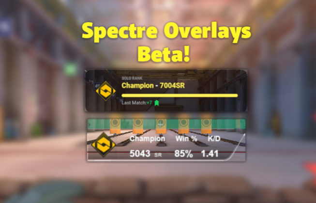
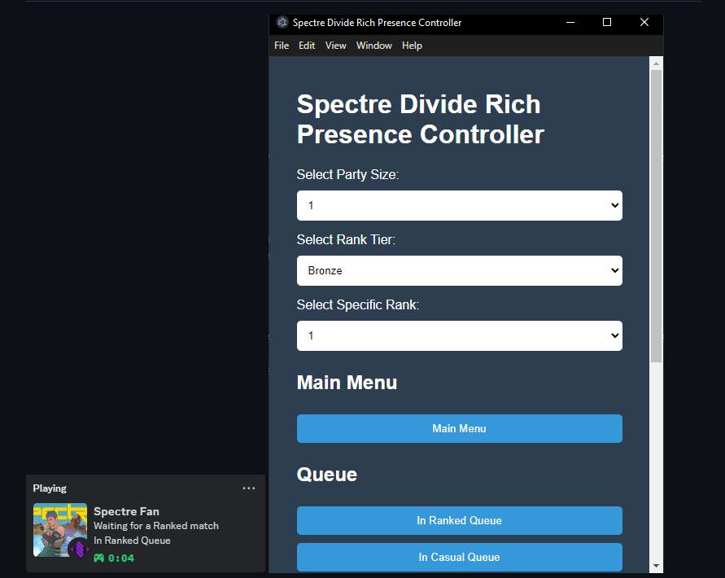
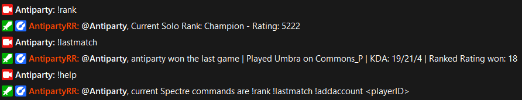
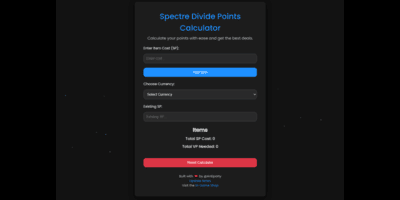
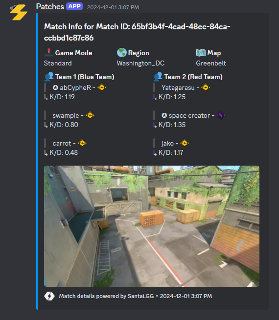

Spectre Divide Rich Presence Controller
A lightweight Electron application for managing your Discord Rich Presence for the Spectre Divide game. This tool allows players to easily set their current game state, rank, and party size visible to their Discord friends

Santai GG Twitch bot
A versatile Twitch bot for SpectrePD streamers, providing player stats, match results, and interactive commands tailored to Spectre Divide players


Santai GG discord Bot
A Discord bot for the Patches Santai GG community, built with discord.js v14.16.3